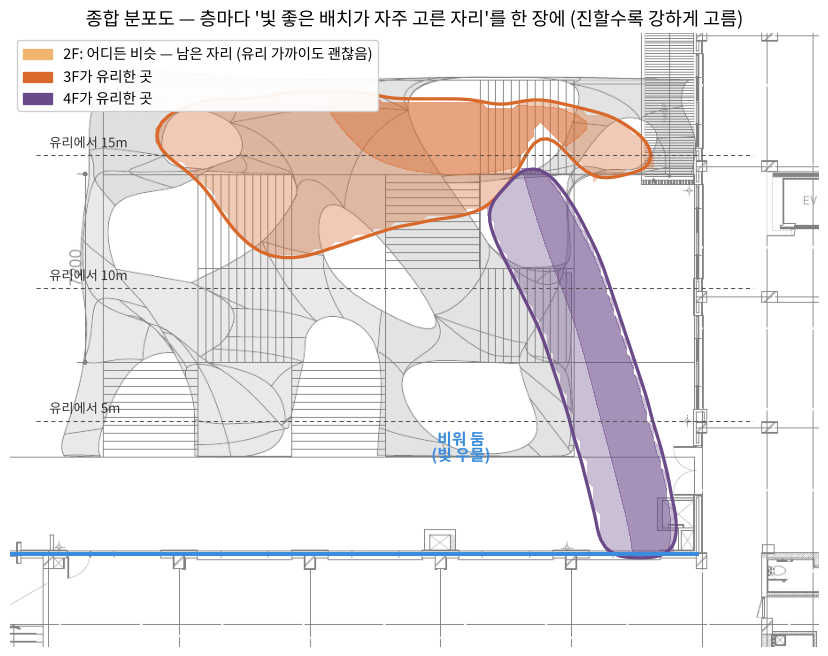
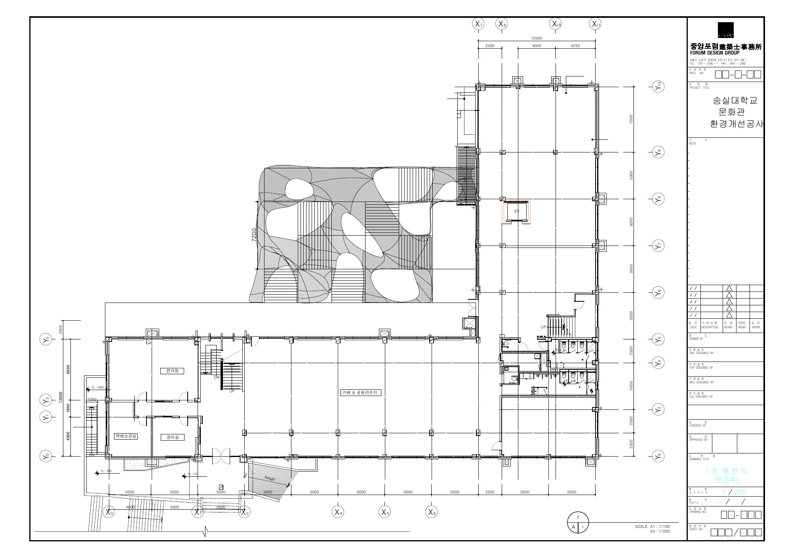
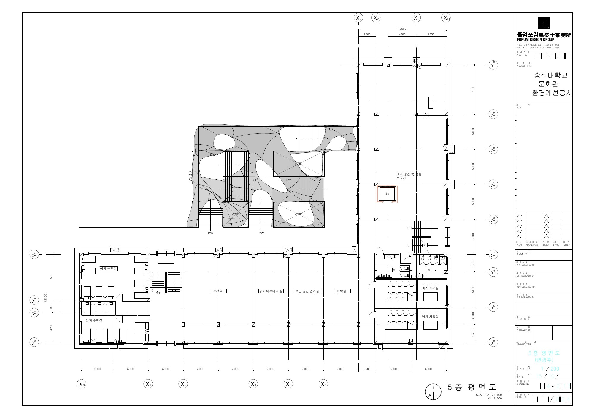
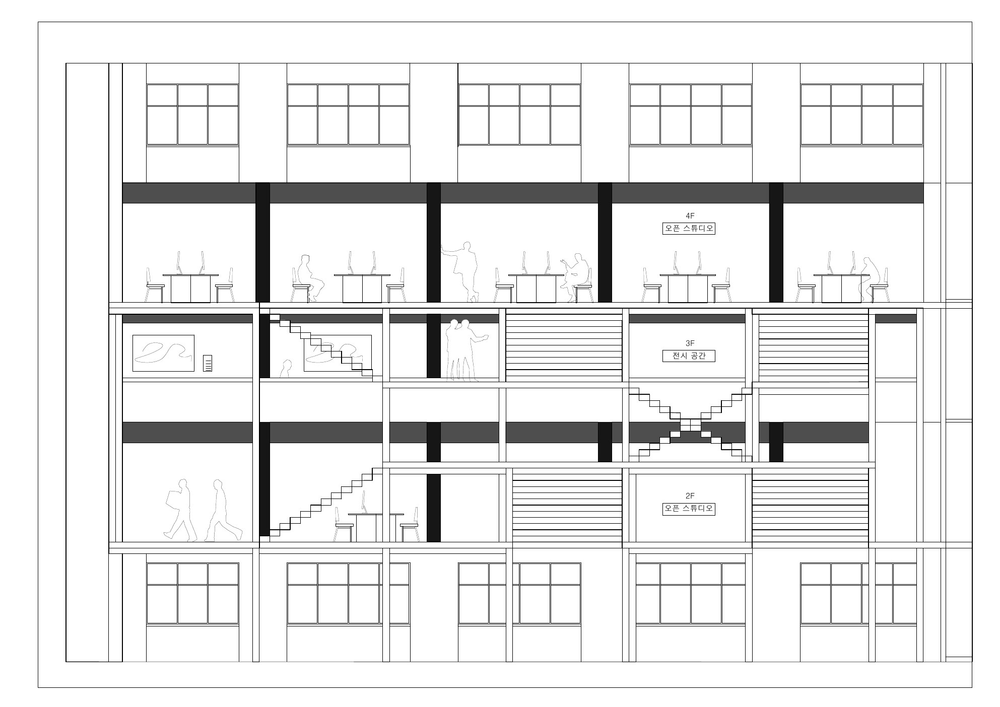
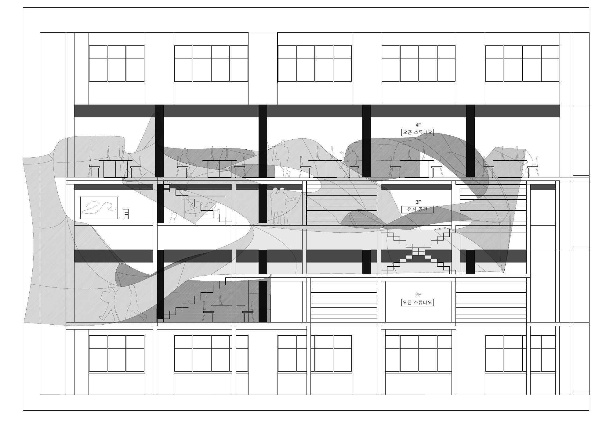
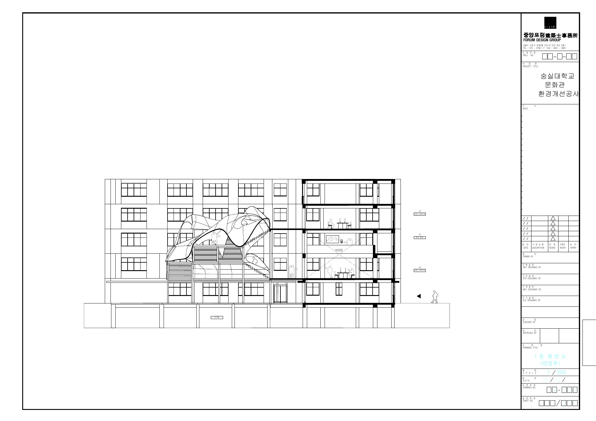
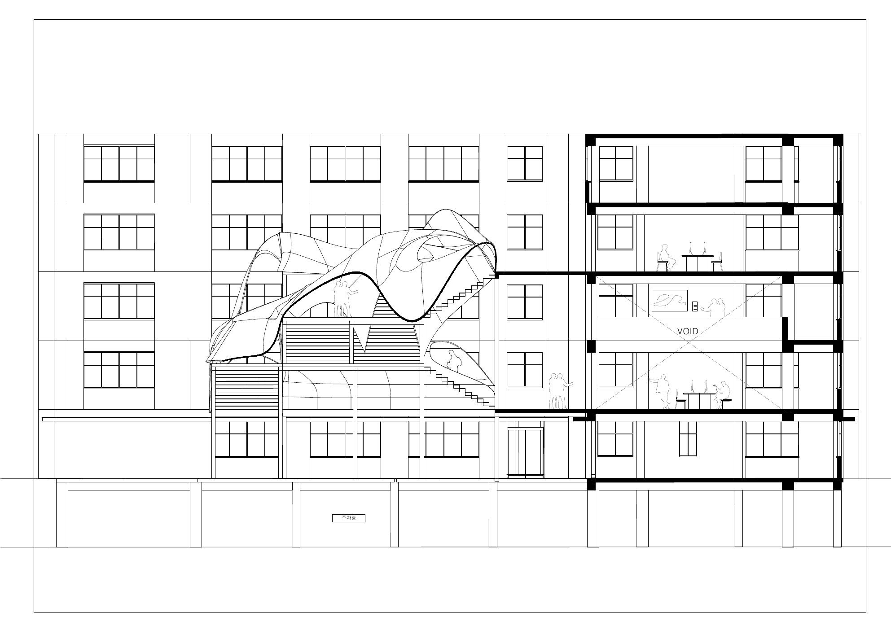
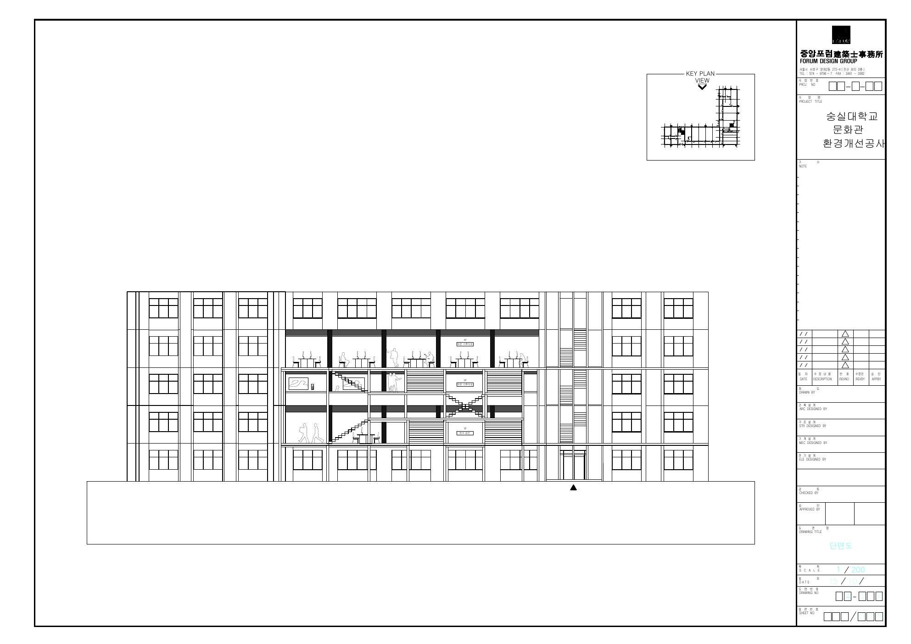
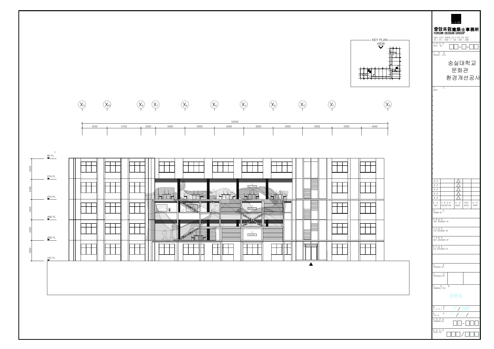
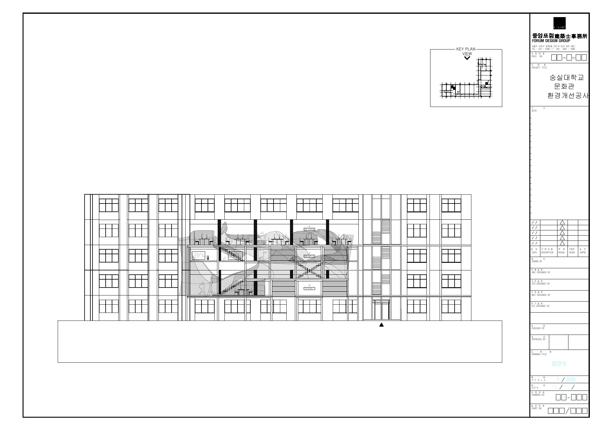

CUT 01
겨울 · 오후 3시
바람 쐬러 나온 4층작업하다 지친 학생이 유리문을 열고 테라스로 나온다. 낮게 들어온 햇빛이 비워 둔 가운데로 쏟아진다.
보이드 · 4F 접합부
문화관이 학생들을 안아 줄 때 — 숭실대학교 문화관 리모델링, 중정 테라스 증축

숨기지 않아도, 드러내지 않아도
작업은 보인다.
3년 동안 문화관을 쓰며 알게 된 것이 있다. 이곳은 두 번 춥다. 벽이 육중하고 빛이 들지 않아 몸이 춥고, 학생들이 각자의 실에 숨어 작업해서 마음이 춥다. 서로의 작업이 궁금해도 들여다보는 순간 '보는 사람'이 드러나기 때문에, 남의 작업을 볼 수 있는 건 크리틱 날뿐이다. 그리고 그날은 평가받는 날이다.
크리틱이 평가가 아니라 일상이 되려면 무엇이 필요할까. 남의 작업을 편하게 볼 수 있어야 하고, 그러려면 보는 내가 드러나지 않아야 한다.
안긴다는 것은 타인의 시선으로부터 보호받는 것이다. 보호받는 학생은 숨지 않고도 남의 작업을 본다. 안긴 사람은 드러나지 않고, 작업은 숨겨지지 않는다. 그때 크리틱은 일상이 된다.
빛 분석은 '어디를 비워야 하는가'를 정했고, 곡선은 '어떻게 안는가'에서 나왔다.
Before · Change · Scenes
몸이 춥다. 벽은 육중하고, 건물의 긴 면이 동·서를 향해 해를 오전에 잠깐, 오후에 잠깐 받는다. 겨울 오전엔 중정 전체가 그늘이다. 바람을 쐬려면 지루한 계단실을 따라 1층까지 내려가야 한다.
마음이 춥다. 3년 동안 본 우리 학생들은 각자의 실에 숨어 작업한다. 다른 사람의 작업이 궁금해도 문을 열고 들여다보면 눈이 마주친다. 그래서 남의 작업은 크리틱 날에만 보고, 그날은 평가받는 날이다.
앞의 행위가 만든 문제를 다음 행위가 푼다
육중한 중정 쪽 벽을 열고 테라스로 바깥과 잇는다. 빛이 들기 시작하고, 작업이 밖으로 드러난다.
테라스가 다시 빛을 막는다. 그래서 띄운다 — 3층은 떼고 2·4층만 두 곳씩 잇는다. 틈으로 빛이 아래층까지 내려가고, 시선이 슬쩍 건너간다.
지친 학생을 안아 주는 난간과 지붕. 안긴 사람은 드러나지 않고, 틈 너머 작업은 숨겨지지 않는다.
스토리보드 컷 자리 — 그림을 그리면 이 칸에 넣는다
작업하다 지친 학생이 유리문을 열고 테라스로 나온다. 낮게 들어온 햇빛이 비워 둔 가운데로 쏟아진다.
곡선 계단을 내려가다 막의 틈 사이로 3층 전시가 보인다. 눈은 마주치지 않고, 작업만 보인다.
2층 무대에서 발표가 시작되자 쌍계단에 사람들이 앉는다. 지나가던 1학년도 멈춰 선다.
스튜디오가 밝아지고 테라스는 어둠 속에 묻힌다. 작업은 더 잘 보이고, 보는 사람은 더 숨는다. 천장 막에는 이번 주 제출작이 상영된다.
히터 아래 계단참에서 잠깐 눈을 붙인다. 감싸는 곡선이 바람과 시선을 막아 준다.
1층 카페에 온 주민이 계단을 따라 올라와 학생들의 작업을 구경한다. 크리틱이 학교 밖으로 번진다.
크리틱은 시간표 속 행사가 아니라, 하루 내내 흘러나오는 이야기가 된다.
평면 · 입면 · 단면 — 중간 크리틱 기준









방위와 해의 경로로 읽은 문제
배치도의 방위표를 읽어 보니, 긴 날개가 남북으로 놓여 있어 긴 면이 동쪽과 서쪽을 본다. 중정 쪽(뒤쪽) 스튜디오 유리는 남향이 아니라 서향이다.
| 면 | 동지 하루 직사광 |
|---|---|
| 중정 쪽 서향 면 | 약 4시간 (오후에만) |
| 연결로 쪽 동향 면 | 약 4.7시간 (오전에만) |
| 짧은 날개 바깥 북향 면 | 0시간 |
빛을 들이는 결정과, 그 빛을 막는 충돌
중정 쪽 스튜디오를 유리로 열어 빛을 들이고, 그 앞에 계단·테라스·감싸는 지붕을 증축한다. 크리틱을 실 밖 일상으로 끌어내는 것이 목적이다.
테라스를 어디에 놓고, 어디를 비워야 문화관 안에 빛이 가장 많이 남을까.
테라스 바닥판은 열어 둔 유리 앞에서 빛 길을 막고 그림자를 만든다. 이 충돌이 이후 모든 분석의 출발점이다.
북위 37.5°, 1년 치 해의 경로
중정 바닥 어디에 무엇이 서면 스튜디오 유리를 가리는지 지도로 그렸다. 겨울엔 중정이 오전 내내 그늘이고, 유리 가까이일수록 낮게만 쌓을 수 있다.
선행 연구(윤정민, 2025, 숭실대 대학원 건축학과 석사논문)도 같은 방향을 말한다. 입면 위치마다 다른 차양이 획일적인 차양보다 낫고, 하부는 채광 보강, 상부는 차폐 강화가 최적이다.
조건을 지킨 배치를 수천 개 만들어 빛 점수로 비교
조건: 2F·4F는 건물과 두 곳 연결, 3F는 건물에서 떨어짐, 쌍계단으로 2F 크리틱 무대에 내려옴, 돌며 머무는 동선.
전체 후보와 빛 좋은 배치의 밀도 비교
빛을 지키는 배치가 곧, 가운데를 감싸 품는 곡선이 된다.
작업이 끝날 때마다 이 기록에 이어 붙인다